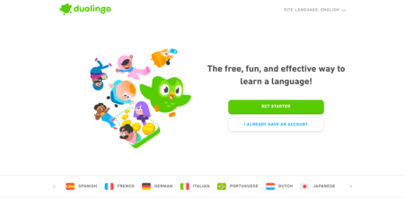

Duolingo,With over 100 million monthly active users, Duolingo is the most popular language learning app.[10][11][12] In total, learners on Duolingo complete more than 13 billion exercises per week.[13] A systematic review of research on Duolingo from 2012 to 2020 found comparatively few studies on the platform's efficiency for language learning but identified several studies that reported relatively high user satisfaction, enjoyment, and positive perceptions of the app's effectiveness.[14] The company has also been recognized for its successful marketing tactics and strong brand Inc.,[b] is an American educational technology company that produces learning apps and provides language certification. Duolingo offers courses on 44 languages,[5] ranging from English, French, and Spanish to less commonly studied languages such as Welsh, Irish, and Navajo, and even constructed languages such as Klingon.[6] It also offers courses on music[7] and math.[8] The learning method incorporates gamification to motivate users with points, rewards and interactive lessons featuring spaced repetition.[9] The app promotes short, daily lessons for consistent-phased practice.

With over 100 million monthly active users, Duolingo is the learning app.[10][11][12] In total, learners on Duolingo complete more than 13 billion exercises per week.[13] A systematic review of research on Duolingo from 2012 to 2020 found comparatively few studies on the platform's efficiency for language learning but identified several studies that reported relatively high user satisfaction, enjoyment, and positive perceptions of the app's effectiveness.[14] The company has also been recognized for its successful marketing tactics and strong brandWith over 100 million monthly active users, Duolingo is the most popular language learning app.[10][11][12] In total, learners on Duolingo complete more than 13 billion exercises per week.[13] A systematic review of research on Duolingo from 2012 to 2020 found comparatively few studies on the platform's efficiency for language learning but identified several studies that reported relatively high user satisfaction, enjoyment, and positive perceptions of the app's effectiveness.[14] The company has also been recognized for its successful marketing tactics and strong brand
app.[10][11][12] In totalystematic review of research on Duolingo from 2012 to 2020 found comparatively few studies on the platform's efficiency for language learning but identified several studies that reported relatively high user satisfaction, enjoyment, and positive perceptions of the app's effectiveness.[14] The company has also been recognized for its successful marketing tactics and strong brandDuolingo also offers the Duolingo English Test, an online language assessment, and Duolingo ABC, a literacy app designed for children. The company follows a freemium model, with optional premium services like Super Duolingo and Duolingo Max, which are ad-free and provide additional features. Additionally, Duolingo runs Duo's Taqueria, a Mexican taco restaurant in Pittsburgh.
Instagram
nstagram[a] is an American photo and videoith filters, be organized by hashtags, and be associated with a location via geographical tagging. Posts can be shared publicly or with preapproved followers. Users can browse other users' content by tags and locations, view trending content, like photos, and follow other users to add their content to a personal feed.[8] A Meta-operated image-centric social media platform, it is available on iOS, Android, Windows 10, and the web. Users can take photos and edit them using built-in filters and other tools, then share them on other social media platforms like Facebook. It supports 32 languages including English, Hindi, Spanish, French, Korean, and Japanese.[9]
Instagram was originally distinguished by allowing content to be framed only in a square (1:1) aspect ratio of 640 pixels to match the display width of the iPhone at the time. In 2015, this restriction was eased with an increase to 1080 pixels. It also added messaging features, the ability to include multiple images or videos in a single post, and a Stories feature—similar to its main competitor, Snapchat, which allowed users to post their content to a sequential feed, with each post accessible to others for 24 hours. As of January 2019, Stories is used by 500 million people daily.[8]
facebook
Facebook — სოციალური ქსელი, რომელსაც ფლობს კომპანია Meta Platforms.[2] მომხმარებლებს შეუძლიათ დაამატონ მეგობრები და გაგზავნონ გზავნილები, შექმნან და განაახლონ პერსონალური პროფილები. გარდა ამისა, მომხმარებელს შეუძლია შეუერთდეს ქსელს ქალაქის, სამუშაო ადგილის, სკოლისა ან რეგიონის მონაცემების მიხედვით.
Facebook დააარსა მარკ ცუკერბერგმა თავის კოლეჯის მეგობრებსა და საინფორმაციო მეცნიერების სტუდენტებთან, ედუარდო სავერინსა, დასტინ მოსკოვიცსა და კრის ჰაგისისთან ერთად, ჰარვარდის უნივერსიტეტის სტუდენტობის დროს.[3]
YOUTUBE
YouTube — ვიდეოპორტალი, სადაც მომხმარებლებს შეუძლიათ ატვირთონ და გაუზიარონ ერთმანეთს ვიდეოები. 2005 წლის თებერვალში[1], PayPal-ის სამმა ყოფილმა თანამშრომელმა შექმნა YouTube, ხოლო 2006 წლის ნოემბერში გუგლმა იგი შეიძინა $1.65 მილიარდად და დღესდღეობით მუშაობს როგორც გუგლის შვილობილი კომპანია. კომპანია დაფუძნდა სან ბრუნოში, კალიფორნიაში და იყენებს Adobe Flash Player-ისა და HTML5-ის ტექნოლოგიას, მომხმარებლების მიერ გამოქვეყნებული მრავალფეროვანი ვიდეომასალის გადმოსაცემად, მათ შორის: კინო და სატელევიზიო კლიპების, მუსიკალური კლიპების, ასევე სამოყვარულო მასალების, როგორებიცაა ვიდეო ბლოგერობა და მოკლე ორიგინალური ვიდეოები. YouTube-ზე ყველაზე მეტ მასალას ტვირთავენ ცალკე პიროვნებები, თუმცა მედია კორპორაციები, მათ შორის CBS, BBC, UMG და სხვა ორგანიზაციები, სთავაზობენ მომხმარებლებს თავიანთ ნაწარმს, საიტის მეშვეობით, YouTube-თან თანამშრომლობის პროგრამის ფარგლებში[2].